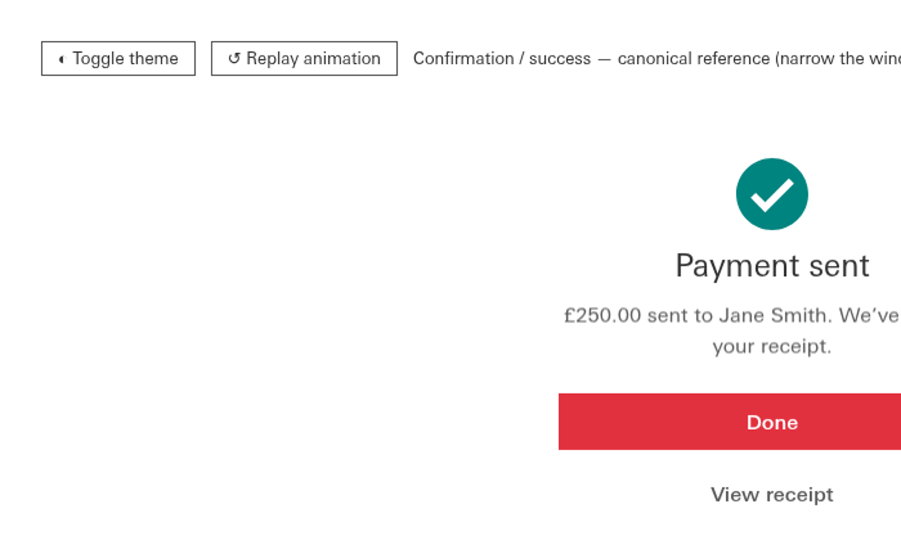

T-D12 — RULED. Batch re-derived and pixel-verified before asking.
Dave: “cool lets go with all your recommendations.”
Q1 → line-height is TYPE. Q2 → the slot carries cap-trim; the shift is accepted.
Q3 → “already declares flex” stands as the slot test.
Enacted in canon/type.css and logged as T-D12 in
_TYPE-DECISIONS.md, which is now the authority — this sheet is the evidence
behind it, kept for the reasoning, not for the state.
.t-cm conflated two separable things, and that is why the /1 batch failed
(T-D11: 13 of 21 files moved, 2 changed page height). The proposal splits them into two lists that
answer two different questions:
| List | Carries | Question it answers |
|---|---|---|
.t-cm-<size> | font-family, font-size, font-weight, line-height:1 | What does this text look like? Safe to bind anywhere. |
.t-cm-slot | display:inline-flex, align-items, min-height, cap-trim | Is this a single-line control? Opt-in only. |
The slot height travels with the type as a custom property (--slot). A custom property
is inert unless something reads it, so a type-only binding carries no box consequence. An element may
join the first list without the second — that is the whole point.
The slot binds only where the element already declares a flex display — the exact
condition .btn met when it bound cleanly, stated as a rule instead of assumed. Observed
split of the batch: 14 take type+box, 16 take type only.
Every touched snippet rendered before and after in the real face and pixel-diffed full-page.
| Variant | Pixel-identical | Page-height changes | Residual |
|---|---|---|---|
T-D11 (old .t-cm, reverted) | 7 / 21 | 2 | the failure |
| Split, line-height in BOX | 11 / 21 | 1 | type-only bindings silently lost line-height:1 |
| Split, line-height in TYPE | 13 / 21 | 0* | 2 files, both explained |
| File | Δ px | Cause |
|---|---|---|
| Badge, Eyebrow, List-items, Notifications, Status-indicator, View-options |
0 with snap held |
T-D10 weight snap, 500→400. Intended. Re-ran with snapping disabled and all six go pixel-identical, which isolates the cause. |
| Cards, Confirmation | 10,136 18,911 |
Cap-trim reaching these buttons for the first time. Geometry probe: only
min-height: auto → 20px changed; x/y/w/h identical on all 75 and 14 elements.
The label optically recentres by about a pixel. This is the Component composite doing its job,
but it is a change and it is yours to accept. |

Both were caught by inspection and diff, not by a gate. Recording them because they are the interesting part.
.tag is on COLLISION_HOLD and was correctly skipped. But the script removed
declarations with str.replace(), which replaces every occurrence of the literal
text in the file — and .tag carries the identical string
font:400 12px/1 var(--font) as the bound .chip. So the held selector was
stripped anyway and fell back to inheriting 16px. Fixed: removal is now scoped to the rule's byte span,
with an assert that the span still matches.
.t-cm-slot appears three times — the base rule and both @supports trim
branches. The writer patched only the first, so newly slotted selectors got flex and min-height but no
cap-trim. Fixed: the slot list patches every occurrence.
line-height:1 TYPE or BOX?This is the ruling that decides the batch. Moving it into TYPE took the result from 11/21 to
13/21 and removed the page-height change, because type-only bindings had been silently dropping the
/1 the shorthand used to carry.
This is the entire residual on Cards and Confirmation. No geometry moves; the label recentres.
recommended Yes — accept the shift. Optical centring is the point of the composite, and refusing it here means the same button is trimmed in Button.reference and untrimmed in Confirmation. No — trim only where trim already existed. Guarantees a true no-op today, but leaves two classes of button in canon and defers the reconciliation.It is deliberately conservative — it is the observed condition .btn satisfied, not a
theory about what ought to be control-shaped. It leaves 16 selectors type-only, including several
(.nav button, .eyebrow, h2) that arguably are
single-line controls and could be slotted deliberately later.
The selector-list mechanism puts bare, unscoped selectors into a globally-linked
stylesheet. h2, .label, .status, .time and
.chip are now global rules in type.css, applying to every snippet that links
it. It held here because component CSS loads second and wins at equal specificity — but that is load
order doing safety-critical work, across 460 selectors, with no gate on it.
The .tag collision is the first instance of this, and it will not be the last. I am not
proposing a change to T-D9; I am flagging that the mechanism's blast radius grows with every binding,
and that it probably wants a gate of its own before the remaining 690 violations are bound.
type.css, 30 bindings across 21 files, 21 files newly
linked to type.css.python3 knowledge/_build_all.py — green, all 30 steps./1 declarations, which need their own reviewed batch.